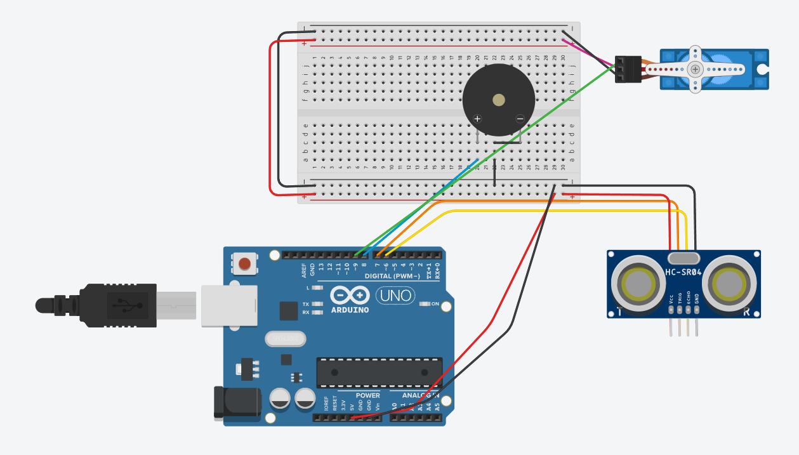

Criamos uma solução prática e higiênica para o descarte de lixo automático.
O projeto é ideal para ambientes domésticos, comerciais ou públicos, pois reduz a disseminação de germes e aumenta a praticidade.
Nossa equipe enfrentou dificuldades na seleção da porta de comunicação. Por se tratar de uma tarefa nova e desconhecida, o desafio foi ainda maior. No entanto, conseguimos solucioná-lo após pesquisar e instalar um driver necessário, disponível no site oficial da marca RoboCop (do kit utilizado). Após a instalação do driver, extraímos os arquivos e instalamos o programa no computador, o que permitiu acessar e utilizar as portas específicas no Gerenciador de Dispositivos. Assim, foi possível escolher a porta correta nas “Ferramentas” do Arduino IDE
Outro desafio foi fixar o sistema de forma cuidadosa e esteticamente agradável, sem danificar nenhum componente do kit ou desconectar fios. Após um tempo planejando, decidimos parafusar a placa Arduino e o protoboard em um pedaço de papelão grosso. Fizemos pequenos furos nas laterais da lixeira, permitindo prender os componentes com enforca-gatos, uma vez que a instituição não permite fixações permanentes, evitando danos aos equipamentos.
Devido à vasta quantidade de materiais e ferramentas desconhecidas, a equipe precisou parar para refletir e analisar o que seria necessário para o projeto. Um exemplo disso foi a decisão sobre como fixar o sistema na pequena lixeira, algo que nenhum de nós havia feito antes. Esse momento de reflexão foi essencial para escolhermos os materiais adequados e garantir a funcionalidade e segurança do sistema.
Entenda como funciona a lixeira automática:
Biblioteca: 'Servo.h' controla o motor servo.
Variável: 'distancia = 0' armazena a distância do sensor.
Função: 'readUltrasonicDistance': Mede a distância com o sensor ultrassônico, emitindo um pulso de 10 microssegundos e retornando o tempo para calcular a distância.
Setup: Conecta o servo ao pino 9, configurando um intervalo de pulso de 500 a 2500 microssegundos.
Loop: Mede a distância em cm, fecha a tampa ('servo_9.write(0)') e aguarda 300 ms.
While Loop: Se a distância ≤ 20 cm, abre a tampa ('servo_9.write(180)') por 2 segundos, atualizando a distância e emitindo um som de agradecimento.
Fechamento: Se a distância > 20 cm, o loop termina e a tampa fecha até nova aproximação.
#include
int distancia = 0;
long readUltrasonicDistance(int triggerPin, int echoPin) {
pinMode(triggerPin, OUTPUT);
digitalWrite(triggerPin, LOW);
delayMicroseconds(2);
digitalWrite(triggerPin, HIGH);
delayMicroseconds(10);
digitalWrite(triggerPin, LOW);
pinMode(echoPin, INPUT);
return pulseIn(echoPin, HIGH);
}
Servo servo_9;
const int buzzerPin = 8;
void setup() {
servo_9.attach(9, 500, 2500);
pinMode(buzzerPin, OUTPUT);
}
void loop() {
distancia = 0.01723 * readUltrasonicDistance(7, 6);
servo_9.write(0);
delay(300);
while (distancia <= 20) {
servo_9.write(180);
playThankYouSound();
delay(2000);
distancia = 0.01723 * readUltrasonicDistance(7, 6);
}
}
void playThankYouSound() {
tone(buzzerPin, 1000, 200); // Frequência em Hz, duração em ms
delay(250);
tone(buzzerPin, 1200, 200);
delay(250);
tone(buzzerPin, 1500, 300);
}
Veja a protótipo do nosso Arduíno:
Plataformas e ferramentas usadas:
Clique aqui para acessar todos os arquivos do projeto:
Baixar Projeto